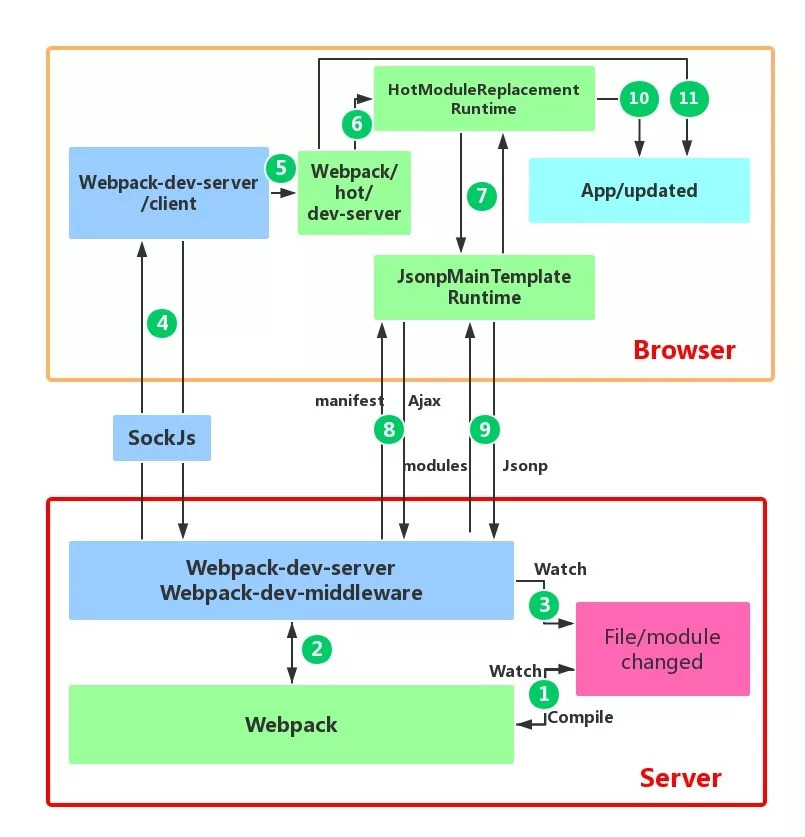
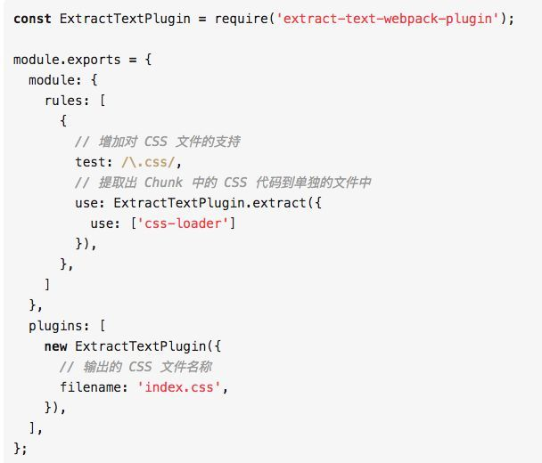
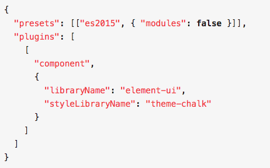

随着现代前端开发的复杂度和规模越来越庞大，已经不能抛开工程化来独立开发了，如 react 的 jsx 代码必须编译后才能在浏览器中使用；又如 sass 和 less 的代码浏览器也是不支持的。 而如果摒弃了这些开发框架，那么开发的效率将大幅下降。在众多前端工程化工具中，webpack 脱颖而出成为了当今最流行的前端构建工具。 然而大多数的使用者都只是单纯的会使用，而并不知道其深层的原理。希望通过以下的面试题总结可以帮助大家温故知新、查缺补漏，知其然而又知其所以然。
#
问题一览
- webpack 与 grunt、gulp 的不同？
- 与 webpack 类似的工具还有哪些？谈谈你为什么最终选择（或放弃）使用 webpack？
- 有哪些常见的 Loader？他们是解决什么问题的？
- 有哪些常见的 Plugin？他们是解决什么问题的？
- Loader 和 Plugin 的不同？
- webpack 的构建流程是什么？从读取配置到输出文件这个过程尽量说全
- 是否写过 Loader 和 Plugin？描述一下编写 loader 或 plugin 的思路？
- webpack 的热更新是如何做到的？说明其原理？
- 如何利用 webpack 来优化前端性能？（提高性能和体验）
- 如何提高 webpack 的构建速度？
- 怎么配置单页应用？怎么配置多页应用？
- npm 打包时需要注意哪些？如何利用 webpack 来更好的构建？
- 如何在 vue 项目中实现按需加载？
# 问题解答
# 1. webpack 与 grunt、gulp 的不同？
三者都是前端构建工具，grunt 和 gulp 在早期比较流行，现在 webpack 相对来说比较主流，不过一些轻量化的任务还是会用 gulp 来处理，比如单独打包 CSS 文件等。
grunt 和 gulp 是基于任务和流（Task、Stream）的。类似 jQuery，找到一个（或一类）文件，对其做一系列链式操作，更新流上的数据， 整条链式操作构成了一个任务，多个任务就构成了整个 web 的构建流程。
webpack 是基于入口的。webpack 会自动地递归解析入口所需要加载的所有资源文件，然后用不同的 Loader 来处理不同的文件，用 Plugin 来扩展 webpack 功能。
所以总结一下：
- 从构建思路来说
gulp 和 grunt 需要开发者将整个前端构建过程拆分成多个 Task ，并合理控制所有 Task 的调用关系 webpack 需要开发者找到入口，并需要清楚对于不同的资源应该使用什么 Loader 做何种解析和加工
- 对于知识背景来说
gulp 更像后端开发者的思路，需要对于整个流程了如指掌 webpack 更倾向于前端开发者的思路
# 2. 与 webpack 类似的工具还有哪些？谈谈你为什么最终选择（或放弃）使用 webpack？
同样是基于入口的打包工具还有以下几个主流的：
- webpack
- rollup
- parcel
从应用场景上来看：
- webpack 适用于大型复杂的前端站点构建
- rollup 适用于基础库的打包，如 vue、react
- parcel 适用于简单的实验性项目，他可以满足低门槛的快速看到效果
由于 parcel 在打包过程中给出的调试信息十分有限，所以一旦打包出错难以调试，所以不建议复杂的项目使用 parcel
# 3. 有哪些常见的 Loader？他们是解决什么问题的？
- file-loader：把文件输出到一个文件夹中，在代码中通过相对 URL 去引用输出的文件
- url-loader：和 file-loader 类似，但是能在文件很小的情况下以 base64 的方式把文件内容注入到代码中去
- source-map-loader：加载额外的 Source Map 文件，以方便断点调试
- image-loader：加载并且压缩图片文件
- babel-loader：把 ES6 转换成 ES5
- css-loader：加载 CSS，支持模块化、压缩、文件导入等特性
- style-loader：把 CSS 代码注入到 JavaScript 中，通过 DOM 操作去加载 CSS。
- eslint-loader：通过 ESLint 检查 JavaScript 代码
# 4. 有哪些常见的 Plugin？他们是解决什么问题的？
- define-plugin：定义环境变量
- commons-chunk-plugin：提取公共代码
- uglifyjs-webpack-plugin：通过 UglifyES 压缩 ES6 代码
# 5.Loader 和 Plugin 的不同？
不同的作用
- Loader 直译为 “加载器”。Webpack 将一切文件视为模块，但是 webpack 原生是只能解析 js 文件，如果想将其他文件也打包的话，就会用到 loader。 所以 Loader 的作用是让 webpack 拥有了加载和解析非 JavaScript 文件的能力。
- Plugin 直译为 “插件”。Plugin 可以扩展 webpack 的功能，让 webpack 具有更多的灵活性。 在 Webpack 运行的生命周期中会广播出许多事件，Plugin 可以监听这些事件，在合适的时机通过 Webpack 提供的 API 改变输出结果。
不同的用法
- Loader 在 module.rules 中配置，也就是说他作为模块的解析规则而存在。 类型为数组，每一项都是一个 Object，里面描述了对于什么类型的文件（test），使用什么加载 (loader) 和使用的参数（options）
- Plugin 在 plugins 中单独配置。 类型为数组，每一项是一个 plugin 的实例，参数都通过构造函数传入。
# 6.webpack 的构建流程是什么？从读取配置到输出文件这个过程尽量说全
Webpack 的运行流程是一个串行的过程，从启动到结束会依次执行以下流程：
- 初始化参数：从配置文件和 Shell 语句中读取与合并参数，得出最终的参数；
- 开始编译：用上一步得到的参数初始化 Compiler 对象，加载所有配置的插件，执行对象的 run 方法开始执行编译；
- 确定入口：根据配置中的 entry 找出所有的入口文件；
- 编译模块：从入口文件出发，调用所有配置的 Loader 对模块进行翻译，再找出该模块依赖的模块，再递归本步骤直到所有入口依赖的文件都经过了本步骤的处理；
- 完成模块编译：在经过第 4 步使用 Loader 翻译完所有模块后，得到了每个模块被翻译后的最终内容以及它们之间的依赖关系；
- 输出资源：根据入口和模块之间的依赖关系，组装成一个个包含多个模块的 Chunk，再把每个 Chunk 转换成一个单独的文件加入到输出列表，这步是可以修改输出内容的最后机会；
- 输出完成：在确定好输出内容后，根据配置确定输出的路径和文件名，把文件内容写入到文件系统。
在以上过程中，Webpack 会在特定的时间点广播出特定的事件，插件在监听到感兴趣的事件后会执行特定的逻辑，并且插件可以调用 Webpack 提供的 API 改变 Webpack 的运行结果。
# 7. 是否写过 Loader 和 Plugin？描述一下编写 loader 或 plugin 的思路？
Loader 像一个 “翻译官” 把读到的源文件内容转义成新的文件内容，并且每个 Loader 通过链式操作，将源文件一步步翻译成想要的样子。
编写 Loader 时要遵循单一原则，每个 Loader 只做一种 “转义” 工作。 每个 Loader 的拿到的是源文件内容（source），可以通过返回值的方式将处理后的内容输出，也可以调用 this.callback () 方法，将内容返回给 webpack。 还可以通过 this.async () 生成一个 callback 函数，再用这个 callback 将处理后的内容输出出去。 此外 webpack 还为开发者准备了开发 loader 的工具函数集 ——loader-utils。
相对于 Loader 而言，Plugin 的编写就灵活了许多。 webpack 在运行的生命周期中会广播出许多事件，Plugin 可以监听这些事件，在合适的时机通过 Webpack 提供的 API 改变输出结果。
# 8.webpack 的热更新是如何做到的？说明其原理？
webpack 的热更新又称热替换（Hot Module Replacement），缩写为 HMR。 这个机制可以做到不用刷新浏览器而将新变更的模块替换掉旧的模块。
原理：

首先要知道 server 端和 client 端都做了处理工作
- 第一步，在 webpack 的 watch 模式下，文件系统中某一个文件发生修改，webpack 监听到文件变化，根据配置文件对模块重新编译打包，并将打包后的代码通过简单的 JavaScript 对象保存在内存中。
- 第二步是 webpack-dev-server 和 webpack 之间的接口交互，而在这一步，主要是 dev-server 的中间件 webpack-dev-middleware 和 webpack 之间的交互，webpack-dev-middleware 调用 webpack 暴露的 API 对代码变化进行监控，并且告诉 webpack，将代码打包到内存中。
- 第三步是 webpack-dev-server 对文件变化的一个监控，这一步不同于第一步，并不是监控代码变化重新打包。当我们在配置文件中配置了 devServer.watchContentBase 为 true 的时候，Server 会监听这些配置文件夹中静态文件的变化，变化后会通知浏览器端对应用进行 live reload。注意，这儿是浏览器刷新，和 HMR 是两个概念。
- 第四步也是 webpack-dev-server 代码的工作，该步骤主要是通过 sockjs（webpack-dev-server 的依赖）在浏览器端和服务端之间建立一个 websocket 长连接，将 webpack 编译打包的各个阶段的状态信息告知浏览器端，同时也包括第三步中 Server 监听静态文件变化的信息。浏览器端根据这些 socket 消息进行不同的操作。当然服务端传递的最主要信息还是新模块的 hash 值，后面的步骤根据这一 hash 值来进行模块热替换。
- webpack-dev-server/client 端并不能够请求更新的代码，也不会执行热更模块操作，而把这些工作又交回给了 webpack，webpack/hot/dev-server 的工作就是根据 webpack-dev-server/client 传给它的信息以及 dev-server 的配置决定是刷新浏览器呢还是进行模块热更新。当然如果仅仅是刷新浏览器，也就没有后面那些步骤了。
- HotModuleReplacement.runtime 是客户端 HMR 的中枢，它接收到上一步传递给他的新模块的 hash 值，它通过 JsonpMainTemplate.runtime 向 server 端发送 Ajax 请求，服务端返回一个 json，该 json 包含了所有要更新的模块的 hash 值，获取到更新列表后，该模块再次通过 jsonp 请求，获取到最新的模块代码。这就是上图中 7、8、9 步骤。
- 而第 10 步是决定 HMR 成功与否的关键步骤，在该步骤中，HotModulePlugin 将会对新旧模块进行对比，决定是否更新模块，在决定更新模块后，检查模块之间的依赖关系，更新模块的同时更新模块间的依赖引用。
- 最后一步，当 HMR 失败后，回退到 live reload 操作，也就是进行浏览器刷新来获取最新打包代码。
# 9. 如何利用 webpack 来优化前端性能？（提高性能和体验）
用 webpack 优化前端性能是指优化 webpack 的输出结果，让打包的最终结果在浏览器运行快速高效。
- 压缩代码。删除多余的代码、注释、简化代码的写法等等方式。可以利用 webpack 的 UglifyJsPlugin 和 ParallelUglifyPlugin 来压缩 JS 文件， 利用 cssnano（css-loader?minimize）来压缩 css
- 利用 CDN 加速。在构建过程中，将引用的静态资源路径修改为 CDN 上对应的路径。可以利用 webpack 对于 output 参数和各 loader 的 publicPath 参数来修改资源路径
- 删除死代码（Tree Shaking）。将代码中永远不会走到的片段删除掉。可以通过在启动 webpack 时追加参数 --optimize-minimize 来实现
- 提取公共代码。
# 10. 如何提高 webpack 的构建速度？
- 多入口情况下，使用 CommonsChunkPlugin 来提取公共代码
- 通过 externals 配置来提取常用库
- 利用 DllPlugin 和 DllReferencePlugin 预编译资源模块 通过 DllPlugin 来对那些我们引用但是绝对不会修改的 npm 包来进行预编译，再通过 DllReferencePlugin 将预编译的模块加载进来。
- 使用 Happypack 实现多线程加速编译
- 使用 webpack-uglify-parallel 来提升 uglifyPlugin 的压缩速度。 原理上 webpack-uglify-parallel 采用了多核并行压缩来提升压缩速度
- 使用 Tree-shaking 和 Scope Hoisting 来剔除多余代码
# 11. 怎么配置单页应用？怎么配置多页应用？
单页应用可以理解为 webpack 的标准模式，直接在 entry 中指定单页应用的入口即可，这里不再赘述
多页应用的话，可以使用 webpack 的 AutoWebPlugin 来完成简单自动化的构建，但是前提是项目的目录结构必须遵守他预设的规范。 多页应用中要注意的是：
- 每个页面都有公共的代码，可以将这些代码抽离出来，避免重复的加载。比如，每个页面都引用了同一套 css 样式表
- 随着业务的不断扩展，页面可能会不断的追加，所以一定要让入口的配置足够灵活，避免每次添加新页面还需要修改构建配置
# 12.npm 打包时需要注意哪些？如何利用 webpack 来更好的构建？
Npm 是目前最大的 JavaScript 模块仓库，里面有来自全世界开发者上传的可复用模块。你可能只是 JS 模块的使用者，但是有些情况你也会去选择上传自己开发的模块。 关于 NPM 模块上传的方法可以去官网上进行学习，这里只讲解如何利用 webpack 来构建。
NPM 模块需要注意以下问题：
- 要支持 CommonJS 模块化规范，所以要求打包后的最后结果也遵守该规则。
- Npm 模块使用者的环境是不确定的，很有可能并不支持 ES6，所以打包的最后结果应该是采用 ES5 编写的。并且如果 ES5 是经过转换的，请最好连同 SourceMap 一同上传。
- Npm 包大小应该是尽量小（有些仓库会限制包大小）
- 发布的模块不能将依赖的模块也一同打包，应该让用户选择性的去自行安装。这样可以避免模块应用者再次打包时出现底层模块被重复打包的情况。
- UI 组件类的模块应该将依赖的其它资源文件，例如. css 文件也需要包含在发布的模块里。
基于以上需要注意的问题，我们可以对于 webpack 配置做以下扩展和优化：
- CommonJS 模块化规范的解决方案： 设置 output.libraryTarget='commonjs2’使输出的代码符合 CommonJS2 模块化规范，以供给其它模块导入使用
- 输出 ES5 代码的解决方案：使用 babel-loader 把 ES6 代码转换成 ES5 的代码。再通过开启 devtool: 'source-map’输出 SourceMap 以发布调试。
- Npm 包大小尽量小的解决方案：Babel 在把 ES6 代码转换成 ES5 代码时会注入一些辅助函数，最终导致每个输出的文件中都包含这段辅助函数的代码，造成了代码的冗余。解决方法是修改. babelrc 文件，为其加入 transform-runtime 插件
- 不能将依赖模块打包到 NPM 模块中的解决方案：使用 externals 配置项来告诉 webpack 哪些模块不需要打包。
- 对于依赖的资源文件打包的解决方案：通过 css-loader 和 extract-text-webpack-plugin 来实现，配置如下：

# 13. 如何在 vue 项目中实现按需加载？
Vue UI 组件库的按需加载 为了快速开发前端项目，经常会引入现成的 UI 组件库如 ElementUI、iView 等，但是他们的体积和他们所提供的功能一样，是很庞大的。 而通常情况下，我们仅仅需要少量的几个组件就足够了，但是我们却将庞大的组件库打包到我们的源码中，造成了不必要的开销。
不过很多组件库已经提供了现成的解决方案，如 Element 出品的 babel-plugin-component 和 AntDesign 出品的 babel-plugin-import 安装以上插件后，在. babelrc 配置中或 babel-loader 的参数中进行设置，即可实现组件按需加载了。

单页应用的按需加载 现在很多前端项目都是通过单页应用的方式开发的，但是随着业务的不断扩展，会面临一个严峻的问题 —— 首次加载的代码量会越来越多，影响用户的体验。
通过 import () 语句来控制加载时机，webpack 内置了对于 import () 的解析，会将 import () 中引入的模块作为一个新的入口在生成一个 chunk。 当代码执行到 import () 语句时，会去加载 Chunk 对应生成的文件。import () 会返回一个 Promise 对象，所以为了让浏览器支持，需要事先注入 Promise polyfill
参考文章
- 关于 webpack 的面试题有哪些？
- 前端面试之 webpack 面试常见问题
- 《深入浅出 webpack》电子版
- webpack 构建性能优化策略小结
原文链接：https://www.cnblogs.com/gaoht/p/11310365.html